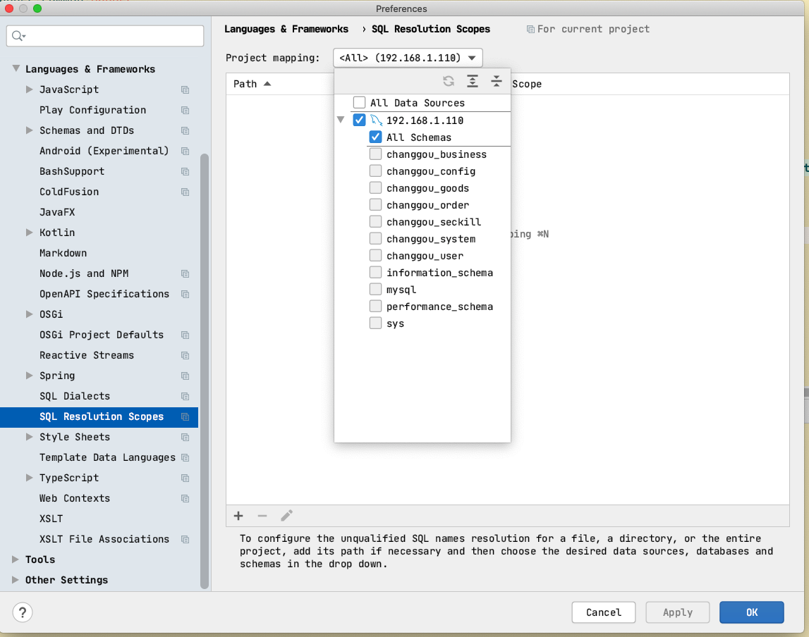
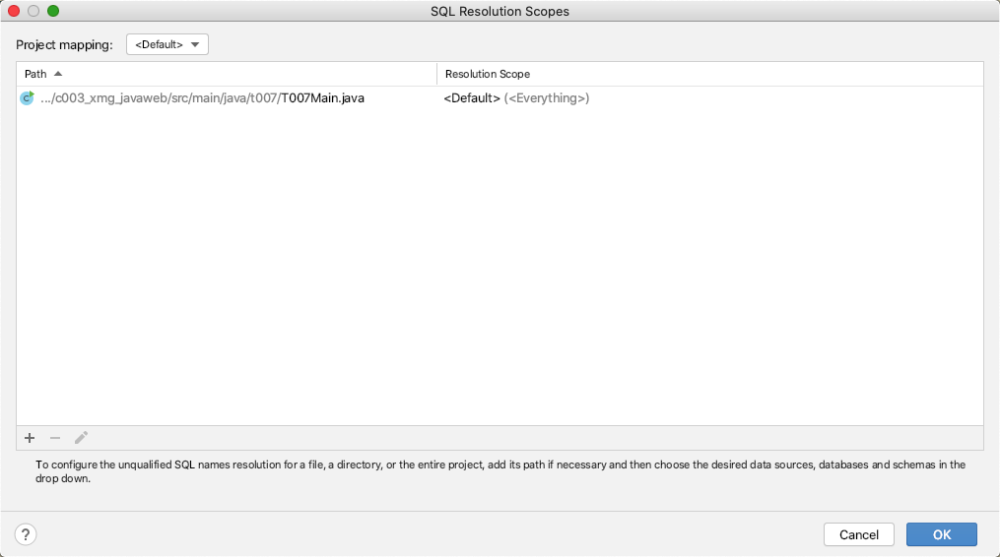

@(工作笔记)
IntelliJ_IDEA-record
[TOC]
调整文本编辑器


.zshrc未在Intellij中加载的tmux中找到
https://stackoverrun.com/cn/q/12802000

IDEA 显示allocated heap size在哪里啊
https://segmentfault.com/q/1010000007260515
webstorm使用stylus语法换行自动缩进
不知道其他代码是否会有影响
⌘+⇧+L outline 快速定位

激活2018版
https://blog.csdn.net/qq_35246620/article/details/79050895
Before launch使用

直接运行命令

运行shell脚本

webstorm 去掉编辑区的白线
https://jingyan.baidu.com/article/e75057f2c3a2efebc91a8921.html
#
https://blog.csdn.net/kimbing/article/details/52829736
webstorm什么快捷键可以选中多个相同的字符串？
https://segmentfault.com/q/1010000009886236

Webstorm 设置 自动换行
https://blog.csdn.net/web_sunjing/article/details/77062285


开启自动上传
取消idea双击shift时出现的全局搜索
来回切换中英文输入法的时候，idea会弹出来一个搜索框，像下图那样，很不方便，现在要把那个弹出框禁用掉

1、按ctrl+shift+a，弹出如下图的搜索框( mac 是 cmd+option+a)
2、输入registry，然后按回车

3、找到“ide.suppress.double.click.handler”，将后面的复选框勾上

4、勾选上复选框后直接点击close，然后双击shift的时候就不会再出现全局搜索框了
该方法同样适用于WebStorm和GoLand
修改是否询问之后再执行

SQL 关键

SQL format
Common 普遍的, 常见的
- Align the first word of clause 从句的第一个词对齐
- place clause elements on 将子句元素放在
- place comma 逗号位置
- collapse short statement 塌陷(무너짐)短语句
- keep section elements under section header 将section元素保存在section标题下
- align section elements 对齐section元素
INSERT statement and VALUES clause 插入语句和值子句
- Place INTO on the new line 将INTO放在新行上
- Place INTO clause elements on 放置INTO子句元素
- Place VALUES clause elements (rows) on 放置VALUES子句元素(在行上)
- Place the opening parenthesis 放置左括号
- Place columns or values 放置列或值
- Place the closing parenthesis 放置右括号
- Wrap columns or values 包裹列或值
- Place comma 放置逗号
- Put spaces within parentheses 在括号内加上空格
- Collapse short multi-row values 折叠短多行值
类JavaLaunchHelper在两个地方实现
由于“此消息无害”（请参阅@ CrazyCoder的回答），一个简单而安全的解决方法是您可以通过IntelliJ IDEA设置在控制台中折叠此嗡嗡声消息：
【首选项】 - 【编辑】 - 【常规】 - 【控制台】 - 【包含控制台的折叠线】 当然，您可以使用【查找操作...】（cmd+shift+A在Mac上）并键入Fold console lines that contain以便更有效地导航。 加 Class JavaLaunchHelper is implemented in both
事实证明，在我的电脑上:( LGTM：b）

你可以展开消息再次检查它：

2019.1.3
https://zhile.io/2018/08/17/jetbrains-license-server-crack.html
解决mysql java.sql.SQLException: The server time zone value‘XXXXXX' is unrecognized or represents...
解决java.sql.SQLException: The server time zone value ‘XXXXXX’ is unrecognized or represents more than one time zone.###
1.报错截图

使用的数据库是MySQL，驱动是6.0.3，这是由于数据库和系统时区差异所造成的，在jdbc连接的url后面加上serverTimezone=GMT即可解决问题，如果需要使用gmt+8时区，需要写成GMT%2B8，否则会被解析为空。再一个解决办法就是使用低版本的MySQL jdbc驱动，5.1.28不会存在时区的问题。
idea中 在接口中如何直接跳转到该接口的是实现类中？
 例如，我想跳转到UserInfoDao 这个接口的实现类中，操作如下：
把鼠标放到这个接口UserInfoDao 上面，右键，选择 GO To ，然后选择 Implementations,就可以直接跳转到 接口实现类中，或者直接把鼠标放到 接口上面，然后输入快捷键：Ctrl+Alt+B ，也可以跳转到实现类中。
例如，我想跳转到UserInfoDao 这个接口的实现类中，操作如下：
把鼠标放到这个接口UserInfoDao 上面，右键，选择 GO To ，然后选择 Implementations,就可以直接跳转到 接口实现类中，或者直接把鼠标放到 接口上面，然后输入快捷键：Ctrl+Alt+B ，也可以跳转到实现类中。
impl 中写的方法 , 快捷方式挪到接口中...

idea安装插件plugin(主要针对网络连接不上的情况)

敲重点！敲重点！敲重点！
选中你需要下载的版本，这边注意，可能与idea有版本兼容问题，建议下载最新版的idea
下载位置：idea解压文件夹下的plugins,我的目录: E:\soft\IntelliJ IDEA 2018.1.2\plugins
下载之后无需解压！不要解压！

制作替身快捷键
数据库默认选择

解决phpstrom 启动卡的问题 和index索引加载慢的问题
https://www.cnblogs.com/zyyweb/p/9616092.html
第一，解决启动卡的问题
只要修改两个Java虚拟机参数，就彻底解决了卡的问题了。
操作步骤如下：
找到C:\Program Files\JetBrains\PhpStorm 2018.2.2\bin 安装目录下
1.找到phpstorm64.exe.vmoptions文件和phpstorm.exe.vmoptions文件，使用记事本打开。
2.添加以下两行代码：
-Dawt.usesystemAAFontSettings=lcd
-Dawt.java2d.opengl=true
3.保存退出。
思路：
phpstorm是使用JAVA开发的。由于IDE提供源文件关键字渲染功能，我们对文件的任何编辑或移动鼠标，都会触发渲染操作。而phpstorm默认的JAVA环境并没有利用机器的硬件加速技术去实现实时渲染，因此当然会让系统卡死。而只要在JAVA环境中让系统默认使用硬件加速，就可以解决占用系统资源过大，让phpstorm卡的问题了。
现在又可以使用回phpstorm的熟悉环境了。
第二解决索引问题：
哪个项目文件夹加载慢 就在哪个文件夹右键------>找到Mark Directory As---->Excluded（排除）这样索引加载就好些了
最新版 maven 自动导入包的选项没了...

以前的
现在

DEA控制台换行

这个时候不需要重启，但是我们发现窗口还没有什么变化，只需要关掉console的窗口，重新开一个就可以看到换行的效果了
| 语法 | 说明 |
|---|---|
| ${变量名#匹配规则} | 从变量开头进行规则匹配 |
MAC版本的IDEA，自己下载的插件都在哪个目录？
https://www.zhihu.com/question/265365107
破解 Markdown Navigator
https://github.com/CrazyBunQnQ/multimarkdown
使用 external tools 打开文件
https://www.jetbrains.com/help/idea/configuring-third-party-tools.html
- Open IntelliJ IDEA -> Preferences
- Select Tools -> External Tools
- Enter a name and description for your tool.
- Leave all fields default except for Parameters.
intellij idea 如何安装本地插件
https://jingyan.baidu.com/article/3d69c5513e5953f0cf02d7b4.html
在 IDEA 中添加使用外部工具打开所选文件
https://www.dazhuanlan.com/2019/12/14/5df3c0b3f3faa/
Windows Server 2003 R2 标准版/企业版永久激活序列号密钥
https://www.nocang.com/windows-server-2003-r2/
IDEA控制台换行

版本控制修改颜色

Surround with Live Template
展开imports , 不要缩

Tuning PhpStorm performance by editing custom VM options
phpstorm使用OpenGL提高速度
PhpStorm在执行大量检查时在大文件中可能会非常慢。加快PhpStorm的一种快速简便的方法是使用OpenGL进行渲染。以前在5000行文件中，在更改为刻度（或红色/黄色框）之前，会在右上角长时间显示“眼睛”符号。OpenGL之后，它几乎立即执行此操作。
要启用OpenGL：
打开： path-to-phpstorm\bin\PhpStorm64.exe.vmoptions
然后将这两行添加到其他行下面：
-Dawt.useSystemAAFontSettings=lcd
-Dawt.java2d.opengl=true
插件路径
$HOME/Library/Application Support/JetBrains/IntelliJIdea2020.1/plugins
sql注入 表报错问题

SQL Resolution Scopes
sql执行块 是否询问, 大块, 小块

mybatis中的 @Param 是什么意思??
@Select("SELECT name,options FROM tb_spec WHERE template_id IN ( SELECT template_id FROM tb_category WHERE name = #{categoryName} )")
List<Map> findSpecListByCategoryName(@Param("categoryName") String categoryName);
spring中的 @RequestParam @PathVariable @RequestBody
@ControllerAdvice 又是个什么东西?
import org.springframework.web.bind.annotation.ControllerAdvice;
/**
* 统一异常处理类
*/
@ControllerAdvice
public class BaseExceptionHandler {
@ExceptionHandler(value = Exception.class)
@ResponseBody
public Result error(Exception e){
e.printStackTrace();
return new Result(false, StatusCode.ERROR, "执行出错");
}
}
选中变量 背景色 变粗 设置
https://stackoverflow.com/questions/26352197/how-to-change-usage-highlight-color-in-intellij-idea
External Tools

jetbrains 付费插件破解 https://www.fuocu.cn/archives/jetbrains-crack/

所有新建项目通用的设置
查看数据库 DDL
cmd+b , 相当于 show create table stu;
pom.xml 灰色

idea项目在maven projects中显示灰色的解决办法
https://blog.csdn.net/weixin_42884584/article/details/82156184

执行数据库语句 最小单位

Go to Type Declaration 追踪的是对象，触发之后跳到类文件中
Jetbrains系列产品重置试用方法
https://zhile.io/2020/11/19/jetbrains-eval-reset.html
右侧竖线 IDEA 去除

IDEA控制台布局设置
idea默认的窗口模式是如下:
可以通过File->setting->appearance-Window Options->勾选 Widescreen tool window layout->OK 变成如下界面：

设置和配置总结
持续更新 多图警告
部分非常用设置本文暂时忽略，请参考官方帮助文档。
Appearance & Behavior
Appearance — 外观
Theme— 从列表中选择所需的主题。高对比度主题适用于视力障碍者。个人比较偏好Darcula深色，有效避免视觉疲劳Use custom font— 启用并指定 WebStrom UI 自定义字体系列和大小。
Accessibility — 辅助功能
Support screen readers (Requires restart)— IDE启用屏幕阅读器 (重启后生效)Use contrast scrollbars— 增强编辑器滚动条颜色对比度Adjust colors for red-green vision deficiency— 调整颜色以适应红绿视力不足，适用于红色色盲和绿色色盲(重启后生效) (附：调整颜色效果)
UI Options — 界面选项
Cyclic scrolling in list— 循环滚动列表：启用后按↓方向键向下滚动列表到最后一个继续按↓，从最后一项跳到第一项，循环滚动 (附：最后一项跳到第一项)。不启用则不会从最后一项跳到第一项。(附：不会跳到第一项)Show icons in quick navigation— 弹出窗口中显示的图标Use smaller indents in trees— 在目录树中使用较小的缩进 (附：默认缩进与较小缩进)Show tree indent guides— 显示目录树缩进参考线 (附：缩进参考线)Automatically position mouse cursor on default button— 在默认按钮上自动定位鼠标光标，例如：打开 Files > Settings 或者 Files > Open时，窗口打开后，鼠标默认在OK按钮的位置上。 (附：光标在默认按钮位置)Hide navigation popups on focus loss— (功能无效果，等待官方答复)Drag-n-Drop with ALT pressed only— 启用后，需要按住Alt键才能拖拽编辑器选项卡
Antialiasing — 抗锯齿
IDE— 设置IDE的包括菜单，工具窗口等文字抗锯齿模式;Editor— 设置编辑器代码文字抗锯齿模式；
默认的
Subpixel模式是最完美的抗锯齿效果，Editor抗锯齿效果最为明显。大家可以调整模式积极性对比。(附：抗锯齿效果对比 Subpixel / Greyscale / No antialiasing)
Window Options — 系统选项
Animate windows— 取消未停靠的工具窗口时，随动画效果一起滑动 (效果不明)Show tool window bars— 显示工具窗口栏 (附：工具窗口栏设置)Show tool window numbers— 显示工具窗口栏编号 (附：工具窗口栏编号设置)Disable mnemonics in menu— 禁用菜单中热键下划线 (附：助记符设置)Allow merging buttons on dialogs— 允许对话框中的多个选项将组合在带有向下箭头的单个按钮下 (附: ？)Display icons in menu items— 图标显示在菜单选项的左侧，否则不带图标 (附：菜单选项图标设置)Side-by-side layout on the left— 左侧工具窗口放置方式。针对宽屏对工具窗口显示的优化 (附：工具窗口放置方式)Side-by-side layout on the right— 右侧工具窗口放置方式Widescreen tool window layout— 为宽屏显示优化了工具窗口的放置方式 (附：宽屏工具窗口放置方式)Always show full paths in window header— 始终在窗口标题中显示完整路径 (附：标题中路径设置)
Presentaition Mode — 演示模式
Font size— 选择演示模式的字体大小。
System Settings (系统设置)
Startup/Shutdown — 启动/关闭
Reopen last project on startup— 启动时重新打开最后一次启动的项目Confirm application exit— 退出时，提示确认关闭，如果确认并选择Do not ask me agein后，可在此重新开启
Project Opening — 打开项目
Default directory— 项目默认目录，此目录在 "打开…" 和 "新建|项目…" 对话框中 预选目录，未设置默认目录，对话框中预选目录可能是 系统用户默认目录 或 当前项目目录 (附：未设置默认目录)Open project in new window— 在新建窗口打开项目Open project in the same window— 在当前窗口打开项目，关闭当前项目并打开新项目Confirm window to open project in— 确认打开项目的方式
Synchronization — 同步设置
Synchronize files on frame or editor tab activation— 从其他应用程序切换到编辑器或编辑器选项卡激活时，同步文件Save files on frame deactivation— 切换到其他应用时，保存文件Save files automatically if application is idle for [number] sec.— 空闲指定秒数时，则自动保存文件Use "safe write" (save changes to a temporary file first)— 使用"安全写入"（首先将更改保存到临时文件）
On Closing Tool Window with Running Process — 关闭时存在运行进程的窗口
Terminate process— 正在运行的进程将断开连接并以静默方式终止Disconnect (if available)— 正在运行的进程将断开连接 (如果有)Ask— 提示选择处理方式
Notifications (通知)
Display balloon notifications— 启用IntelliJ IDEA的事件气球通知，但无论是否启用气球通知，事件日志中找到当前会话的所有通知Enable system notifications— 启用系统通知，禁用此选项可以从系统托盘中隐藏IntelliJ IDEA图标Group— 此列列出了可能会通知您和/或可能会记录的事件组\Popp— 设置显示相应事件组\的通知方式Balloon— 带有通知消息的气球会在屏幕上显示一小段时间，然后自动消失。通知还显示在状态栏中，并添加到通知列表中Sticky balloon— 需要手动关闭的通知气球Tool window balloon— 仅在打开适当的工具窗口时才会显示通知提示框No popup— 不显示相应事件组的通知log— 记录相应的事件，并且可以在“事件日志”工具窗口中看到该事件。
Editor (编辑设置)
General (常规设置)
Mouse Control — 鼠标控制
Change font size with Ctrl+Mouse Wheel— 使用Ctrl+鼠标滚轮更改字体大小Move code fragments with drag-and-drop— 在编辑器中拖放代码片段
Soft Wraps —
...待续
附录
Adjust colors for red-green vision deficiency
调整颜色效果
Cyclic scrolling in list
最后一项跳到第一项
Cyclic scrolling in list
不会跳到第一项
Use smaller indents in trees
默认缩进与较小缩进
Show tree indent guides
缩进参考线
Automatically position mouse cursor on default button
光标在默认按钮位置

Antialiasing
抗锯齿效果对比 Subpixel / Greyscale / No antialiasing
Show tool window bars
工具窗口栏设置
左下角图标，点击切换工具窗口栏的显示设置，鼠标经过选择工具窗口
Show tool window numbers
工具窗口栏编号设置

Disable mnemonics in menu
助记符设置
Display icons in menu items
菜单选项图标设置
Side-by-side layout on the left
工具窗口放置方式
Widescreen tool window layout
宽屏工具窗口放置方式
Always show full paths in window header
标题中路径设置
Default directory
未设置默认目录
IntelliJ IDEA控制台junit不能用Scanner输入

IntelliJ IDEA 修改内存大小，运行大项目再也不卡了
显示当前堆级别和内存使用情况。此部分在状态栏中的可见性由 "设置/首选项" 对话框的 "外观" 页中的 "显示内存指示器" 来定义。默认情况下不显示该选项。
单击内存指示器运行垃圾回收器
将鼠标指针悬停在图标上会显示工具提示上的当前代码检查配置文件。
点击 Hector 图标会显示一个包含以下功能的对话框：
突出的水平。使用滑块更改当前文件的突出显示级别，或检查配置文件进行配置。
根据滑块所选择的突出显示级别，Hector 会密切注意代码
 （检查级别），转动半面（Syntax），或者避开代码 （None）。
（检查级别），转动半面（Syntax），或者避开代码 （None）。节能模式。选择此复选框可以减少计算机的功耗，因为消除了后台操作。要表示模式打开，Hector 会淡出
。
当节能模式打开时，IntelliJ IDEA 通过不执行耗费笔记本电脑电池的昂贵的后台活动，减少其功能的一个文本编辑器。这些活动包括错误突出显示和即时检查，自动完成代码和自动完成增量后台编译。
您也可以通过主菜单上的 File | Power Save Mode 命令切换节能模式。
- 导入弹出式菜单。使用此复选框启用或禁用自动导入当前文件。您可以在"设置/首选项" 对话框的 "自动导入" 页中为整个产品关闭自动导入。
Quick Lists
IntelliJ IDEA 代码窗口最大化
https://blog.csdn.net/assassinsshadow/article/details/73893623